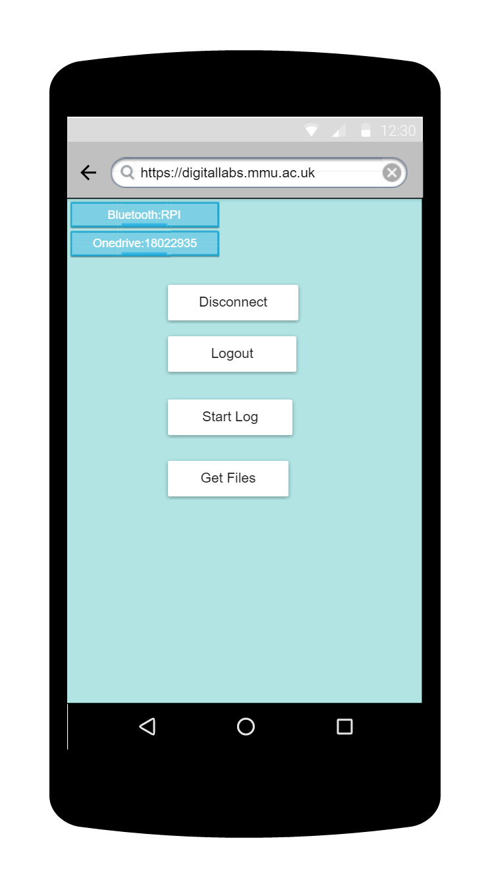
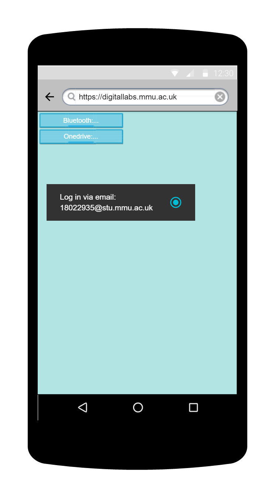

Ther 5 buttons when you first open up the app all doing different things.
In the top right hand corner there are top boxes notfiying if you are connected to bluetooth and OneDrive.
Ξ∞×
... and another note for page 1.

Ξ∞×
This is the ain menu you page if you have connnected to the onedrive and Bluetooth connection
the differences here are the two top buttons as they will give you the options of disconnecting from your current bluetooth device and onedrive account.
Ξ∞×
This is a loading page showing which bluetooth devices the app can connect to at the moment and when a user clicks on one he will be sent to another page
Ξ∞×
This is a notifcation page that will simply tell the user that they have connected to a bluetooth devices and will show a blue tick showing which oen you are connected to.
Ξ∞×
Here's a note for the start page.

Ξ∞×
Here's a note for the start page.
Ξ∞×
Alice adds text that she wants to annotate to the annotaion text field
Then she presses the send annotation button
When Alice wants to stop loggin data, she presses stop to take her back to the main meun.